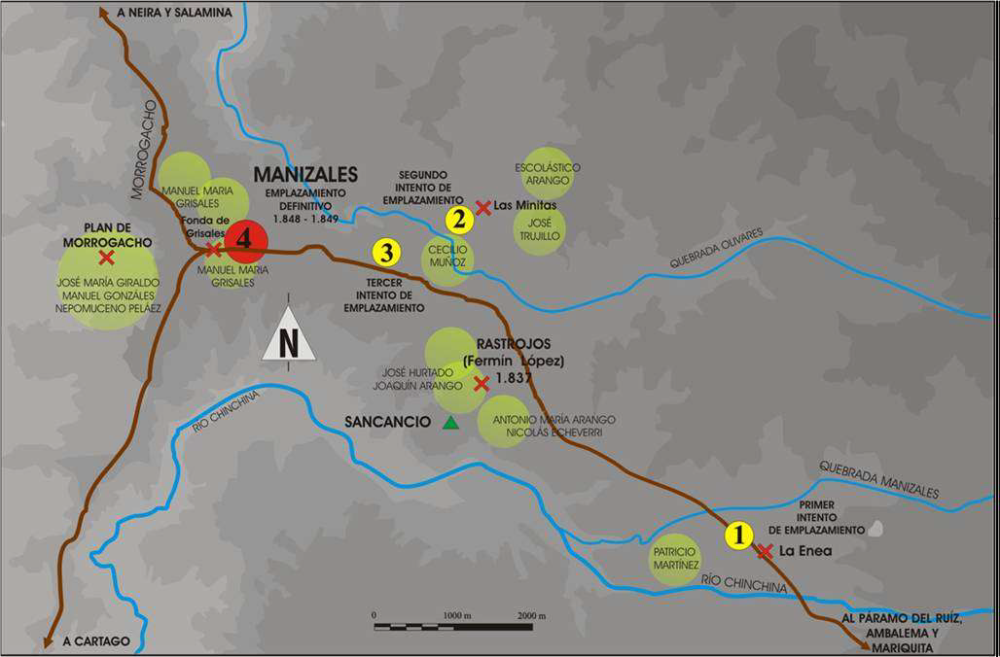
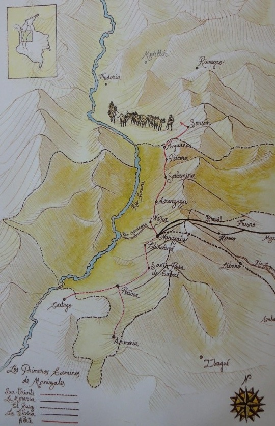
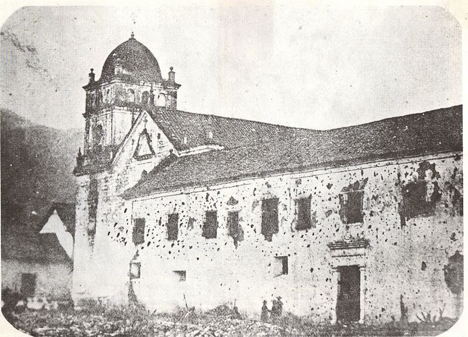
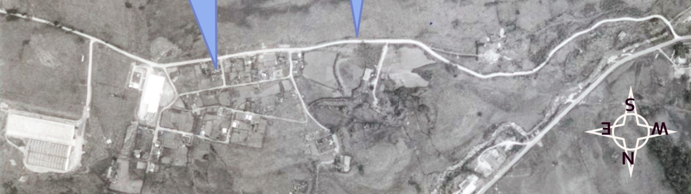
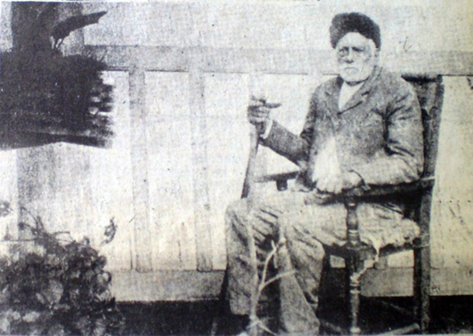
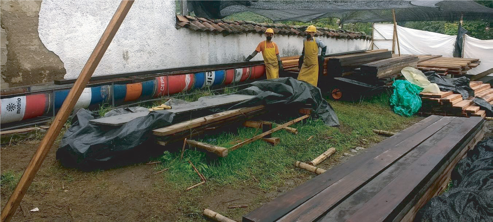
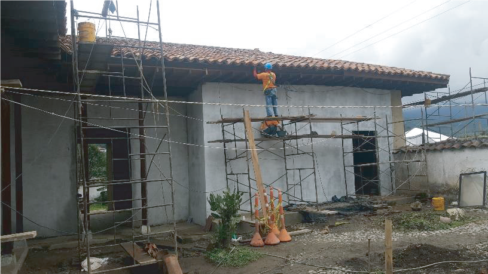
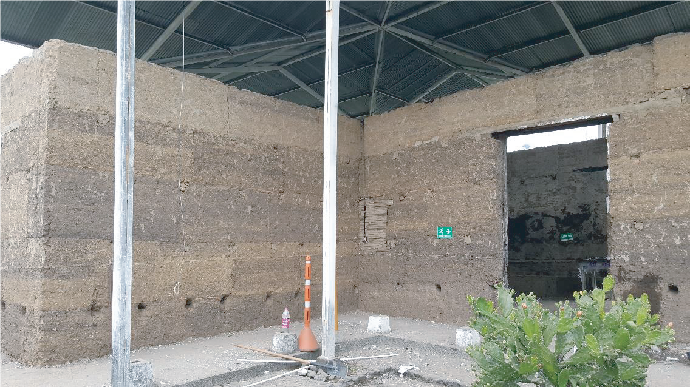
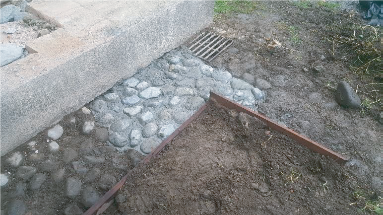

"En 1876 se dio la revolución popular contra el gobierno de Aquileo Parra.
Como producto de los sucesos posteriores, se confiscaron los bienes eclesiásticos del Templo de Manizales, sus sacerdotes tuvieron que huir.
El Padre Nazario Restrepo, fue uno de ellos, el cual se refugió en la vereda de la Enea; sitio del primer asentamiento de un poblado en el área, propiedad de Don Pablo Jaramillo, quien le dio asilo.
A petición del Padre Nazario, Don Pablo mandó a construir, en el mismo año, un pequeño templo con muros de tapia pisada y la estructura de la cubierta en cerchas rey de madera rolliza
Posteriormente, el Padre Nazario viajó a Medellín, cansado de tantas guerras y violencia, volvió a pie a La Enea cargando un Cristo de madera como símbolo de paz; pronto el pequeño santuario y su imagen, adquirieron gran devoción entre los vecinos, llegando a ser sitio de peregrinación a través del tiempo.
El Templo… fue consumido por un voraz incendio en el año 2010, quedando solo en pie las tapias, y como testigo de lo ocurrido, el copón de las Hostias Consagradas que permanece intacto.
Este Templo fue declarado Monumento Nacional en 1983 y para la gloria de Dios restaurado… en el año 2017"
Registro histórico
Manizales fue fundada por colonos antioqueños que se desplazaron hacia el alto Cauca en busca de fortuna. Tras la llegada al territorio que hoy ocupa la ciudad, hubo dentro del grupo de colonizadores cierta discrepancia acerca del lugar más idóneo para la creación del poblado. Se tomaron como referencia varios lugares que presentaban diversas condiciones como climas más benévolos, riquezas mineras y mayor cercanía con fuentes de agua, planteando ubicaciones en los actuales sectores del Alto del Perro, Sancancio, Minitas y La Enea
El doce de octubre de 1849 se sancionó la ordenanza de creación del distrito parroquial de Manizales , tomando esta fecha como el día oficial de fundación de la ciudad. Se trazan la plaza y las calles de acuerdo a la tradición hispana y se distribuyen los solares asegurando los más centrales para los colonos de mayor prestigio.
por fuera de la trama demarcada empezaron a formarse algunos núcleos urbanos que más tarde cobraron importancia trascendental en la historia de la ciudad. Tal es el caso del caserío asentado hacia el oriente sobre el camino del Ruiz, donde se estableció uno de los colonos llegado desde Abejorral y de nombre Pablo Jaramillo. Este aventurero aunque no figura entre los veinte expedicionarios, ya se encontraba en el territorio al momento de decidir la ubicación del poblado, siendo defensor del área de La Enea como la más idónea para consolidar la fundación, ya que contaba con una mejor conformación del terreno y un clima más benigno.
Las Guerras
En la historia de la colonización antioqueña, Manizales se estableció como eje comercial por estar ubicada en el cruce de los caminos que comunicaban los Estados de Cauca, Tolima y Antioquia. Esta posición fronteriza no solo facilitó su desarrollo, también la convirtió en plaza militar durante las guerras de 1860 y 1876, sufriendo la ciudad un bloqueo por parte de los liberales, que valió la expulsión de los sacerdotes y la prohibición de los oficios religiosos
En estas circunstancias la Capilla de la Enea cumplió un papel preponderante al convertirse en el único escenario que pudo seguir desarrollando sus funciones, con lo cual representó no solo un núcleo religioso, sino un nuevo eje de crecimiento urbano sobre los caminos que conectaban la ciudad con el Magdalena
batalla librada en Manizales y conocida como “La Esponsión ” salió perdedor el general, tras lo cual suspendió su hostilidad contra el gobierno central y firmó un convenio que al no ser aceptado por el presidente Ospina, lo llevó a unificar nuevamente las fuerzas liberales y a entrar en una guerra que finalizó con la toma de Bogotá en julio de 1861. Este incumplimiento del gobierno no solo representó la toma de la capital, también condujo al segundo gobierno de Mosquera; a la desamortización de bienes de manos muertas; a la separación de la Iglesia y el Estado
La Enea
Con la fundación de Manizales se inició una expansión hacia el oriente en busca de comunicar la región con las poblaciones aledañas al rio Magdalena. Durante la segunda mitad del siglo XIX, se exploraron algunos caminos que habían sido utilizados como ruta militar y así mismo se crearon o mejoraron unos más que consiguieron dinamizar el comercio y comunicar las áreas de Bogotá y Tolima con el Cauca. El camino del Ruiz se inició en 1843. Salía de Manizales y pasaba por termales, descendiendo a Mariquita y llegando hasta Ambalema. En 1851 fue utilizado por las tropas demostrando su importancia a nivel nacional. El camino de La Elvira se planteó en 1864 con el fin de comunicar la ciudad de Manizales con Tolima y Cundinamarca
Es importante destacar la importancia que la vía hacia el Magdalena alcanzó dentro de la ciudad. Tres caminos se dirigen por diferentes rutas hasta las regiones de Cundinamarca y Tolima, volcando el desarrollo urbano hacia este sector y dejando posesionando el poblado de La Enea como una zona importante de expansión y crecimiento

El trazado a finales del siglo XIX de los caminos hacia el oriente, determinó la conformación de un caserío al borde de estas nuevas rutas. Estas tierras de propiedad del señor Pablo Jaramillo, contaban con numerosos trabajadores que empezaron a asentarse en la zona, demarcada a partir del puente de la Libertad. Este carácter de núcleo alejado del casco urbano, produjo un conjunto de inmuebles representantes de una arquitectura de singulares características, reuniendo los conceptos de la arquitectura colonial rural y las primeras manifestaciones ornamentales de un incipiente estilo republicano
La capilla de La Enea forma parte de las primeras construcciones que dieron origen al poblado que más tarde se consolidaría como un extenso y populoso sector de la ciudad de Manizales. Ubicada en terrenos de Pablo Jaramillo, representa una de las primeras iglesias -no la primera - de la ciudad y la tipificación del sistema de construcción colonial que traían en el imaginario los colonizadores. En el momento de su construcción fue consagrada a Nuestra Señora del Rosario.

El padre Nazario

La iniciativa de construir una capilla surgió del padre Nazario Restrepo Maya conocido como Nazarito. Este sacerdote antioqueño nacido en Sonsón y ordenado del Seminario de Medellín en 1871, ejerció los primeros años de su ministerio en Manizales, donde llevó una vida ascética y penitente. Su vida de oración atrajo a la comunidad que veía en él no solo un ejemplo de sacrificio sino una voluntad férrea para sacar adelante los proyectos que emprendía
Se dice que antes de iniciar la construcción, el padre Nazarito vino a pie desde Sonsón, su patria chica, con pesada cruz a cuestas, en hábito y en actitud de penitente, ofreciendo semejante sacrificio por la paz de la república que entonces se debatía en tremenda guerra civil, la guerra de 1876, y cuando la iglesia colombiana sufría inicua persecución
El padre Nazario murio en Sonsón en 1916 donde había nacido en 1846. (70 años)
Pablo Jaramillo "El Antioqueño"
Pablo Jaramillo no figura entre esta lista de los fundadores de Manizales, porque él a pesar de estar entre ellos, no se puso de acuerdo con los demás sobre el sitio de fundación, porque él tenía la certeza de que el mejor sitio para ello eran los planes de la Enea. El sostuvo que las tierras de la Enea eran mejor conformadas, tenían un clima más benigno, etc. Como sus compañeros no estuvieron de acuerdo con él. Se fue con su esposa Leonarda Londoño, sus bueyes y sus caballos y abrió tierras exactamente desde el alto del Perro (un árbol frondoso que se encuentra en el límite del Batallón Ayacucho y la carretera, es el único testigo que queda de esta colonización…).
El Incendio
FENIX: EL SANTO TEMPLO PARROQUIAL DE SAN PÍO X DE LA ENEA, UN PATRIMONIO QUE SE LEVANTA DE LAS CENIZAS
Aquel 24 de diciembre del año 2010, se desarrollaban las actividades normales de la víspera de navidad; desde días anteriores según el padre Gilberto López Hincapié, párroco de la época, se había dispuesto de todos los preparativos para la misa de Noche Buena, la cual comenzó a las 9 de la noche, buscando que los feligreses pudieran luego compartir en familia como es tradición
La misa estuvo solemne y concurrida, como suelen ser las misas de navidad, se cantaron villancicos junto al pesebre, se rezó la novena y se escuchó con atención el sermón del Señor Cura; se consagraron las sagradas formas, con las que comulgaron los fieles y que posteriormente se guardaron en el sagrario y que serían testigos de los hechos que acontecieron después de la misa
Terminada la misa de Noche Buena, se cerró el Templo y el Señor Cura se retiró a la casa cural para compartir la cena de navidad con algunos amigos. Pasadas las 10 de la noche, se escucharon los gritos de una señora que decía que se estaba quemando la Capilla, el padre López salió apresurado y contempló como salían las llamas por el techo del Templo, en un acto heroico, el Señor Cura, abre una de las puertas laterales del Templo buscando salvar el Santísimo Sacramento, pero la conflagración no le permitió entrar, impotente se convirtió en uno de los tantos espectadores que veían como las llaman consumían un Templo centenario, su templo parroquial.
Cuando llegaron los bomberos, una máquina de Villamaría, buscaron los hidrantes, el más cercano estaba a una cuadra del Templo encerrado por una reja, dentro del jardín de una casa vecina, la manguera de la máquina no alcanzaba a llegar al Templo, luego llegaron los bomberos de la estación del SENA y de Palogrande… ya había transcurrido más de una hora, tiempo en el cual, las llamas consumían vertiginosamente el Templo.

Un hecho que sembró la esperanza dentro de los espectadores, fue cuando uno de los bomberos, a eso de las 2 de la madrugada, entro a la capilla para cerciorarse de que el incendio estaba controlado, miró hacia la pared del fondo y observó que había algo dentro de un cajón, era el copón con el conopeo y a un lado la píxide con la forma consagrada de la exposición, el bombero sacó el copón y la píxide, sin saber lo que contenía y las entregó al padre López, que se encontraba en la puerta de la casa cural en compañía de las hermanas de Ravasco, quienes al ver lo sucedido rompieron en llanto al ver que las formas estaban intactas, tanto las del compón, como la forma consagrada de la píxide


La Reconstrucción
El patrimonio desconocido, así llama al Templo de san Pío X el padre Luis Gonzaga Duque , el gran gestor de la reconstrucción, un sacerdote recordadoy querido por la comunidad de la Enea por su gran capacidad de gestión y su perseverancia en la reconstrucción del Templo
El Padre Duque encontró un salón adecuado como Capilla, en el cual se reunían los fieles para participar de las celebraciones litúrgicas, pero sobre todo, fue recibido por una comunidad unida y comprometida, con una pastoral viva y con la añoranza de reunirse de nuevo en aquel templo centenario, cuyas ruinas se encontraban en aquel entonces, bajo una cubierta en perfilería y eternit protegiendo las tapias
Según la placa conmemorativa de la restauración, están por parte del departamento de Caldas, el Señor Gobernador Doctor Guido Echeverri Piedrahita, el Secretario de Cultura de Caldas el Doctor Lindon Alberto Chavarriaga Montoya y el Arq. Diego Mauricio Echeverri Chica; por la Administración Municipal de Manizales, el Señor Alcalde José Octavio Cardona León y el Secretario de Obras Publicas de Manizales el Doctor Cesar Alberto Gutiérrez García; por las Arquidiócesis de Manizales, el Señor Arzobispo Monseñor Gonzalo Restrepo Restrepo y el párroco de la Parroquia de san Pío X, el padre Luis Gonzaga Duque García; por el Consocio La Capilla, el Arq. Juan Pablo Dorado Martínez y el Ing. Fernando Paez Restrepo y como interventor el Arq. Néstor Adel Vargas Pedroza.
LOS MATERIALES
Los materiales utilizados en la construcción de la parroquia es la materialidad típica de la colonización antioqueña, pisos exteriores en piedra y muros en tapia, estructura de cubierta en madera y teja de barro, incorporándose en la restauración materiales de este nuevo siglo, es decir, conservando el sistema constructivo y complementándolo con los elementos y normas vigentes como lo son la utilización de placas de superboard (cubierta y muros), maderas estructurales y no estructurales en chanul
Los acabados son pintura a base de cal y acronal, pilares de madera, pisos en el tablón de arcilla, los muros en su mayoría son en Tapia y las cubiertas están compuestas por capas de superboard, manto asfáltico, Papel kraft, malla electro soldada y finalmente la teja de barro.
ESTRUCTURA DE CUBIERTA
Corresponde a la construcción y montaje de las cerchas, correas, canes, arriostramiento horizontal y vertical de la estructura y demás elementos necesarios para la conformación del área de la estructura de cubierta, de acuerdo con los planos estructurales, con elementos de madera en diferentes secciones según el elemento (18x04 y 12x04) todo inmunizado bajo sistema de inmersión con Fortage diluido en Agua
muros
Construcción de los muros requeridos en el proyecto que por su comportamiento estructural y tamaño de los elementos estructurales se clasifican en 4 tipos según se indica en los planos estructurales del proyecto. Muros en Tapia,muros nuevos en bahareque ,muros nuevos en Superboardy muros estructurales, hechos en concreto
Los senderos exteriores son en piedra de canto rodado pegado sobre una losa de concreto y sobre el cual se hizo necesario realizar la reposición y restauración de algunos sectores de los mismos ya que por el paso de los años y la falta de mantenimiento habían hecho que se necesitaran intervenir
La carpintería de madera (puertas y ventanas) fue construida en su gran mayoría nueva en madera de cedro rojo que era el tipo de madera original de las mismas debido a que la carpintería hallada se encontraba severamente afectada por el incendio debido a la esbeltez de sus piezas y sobre las cuales no se podía realizar una restauración la cual garantizara la estabilidad de las mismas El acabado de esta carpintería es una mezcla de Gasolina con vareta y aceite de linaza que además funciona como hidratante sobre la misma madera. La madera del cielo falso exteriores y de los pies derechos de soporte del cielo raso exterior tienen como acabado aceite de linaza.

INSTALACIONES HIDROSANITARIAS Y DE EXTINCION DE INCENDIOS
Todas las instalaciones hidrosanitarias son nuevas, construidas todas de acuerdo al proyecto hidrosanitario en tubería PVC presión y PVC sanitaria, solo la red contra incendio va en tubería de acero al carbón ranurada 2” y solo el tramo de tubería que no está en contacto con la tierra, el resto de la tubería es en PVC presión, también cuenta con 1 gabinete contra incendios clase 2 con su respectiva siamesa para la inyección de columna de agua por parte de bomberos
Parroquia San Pio X Antes y Ahora